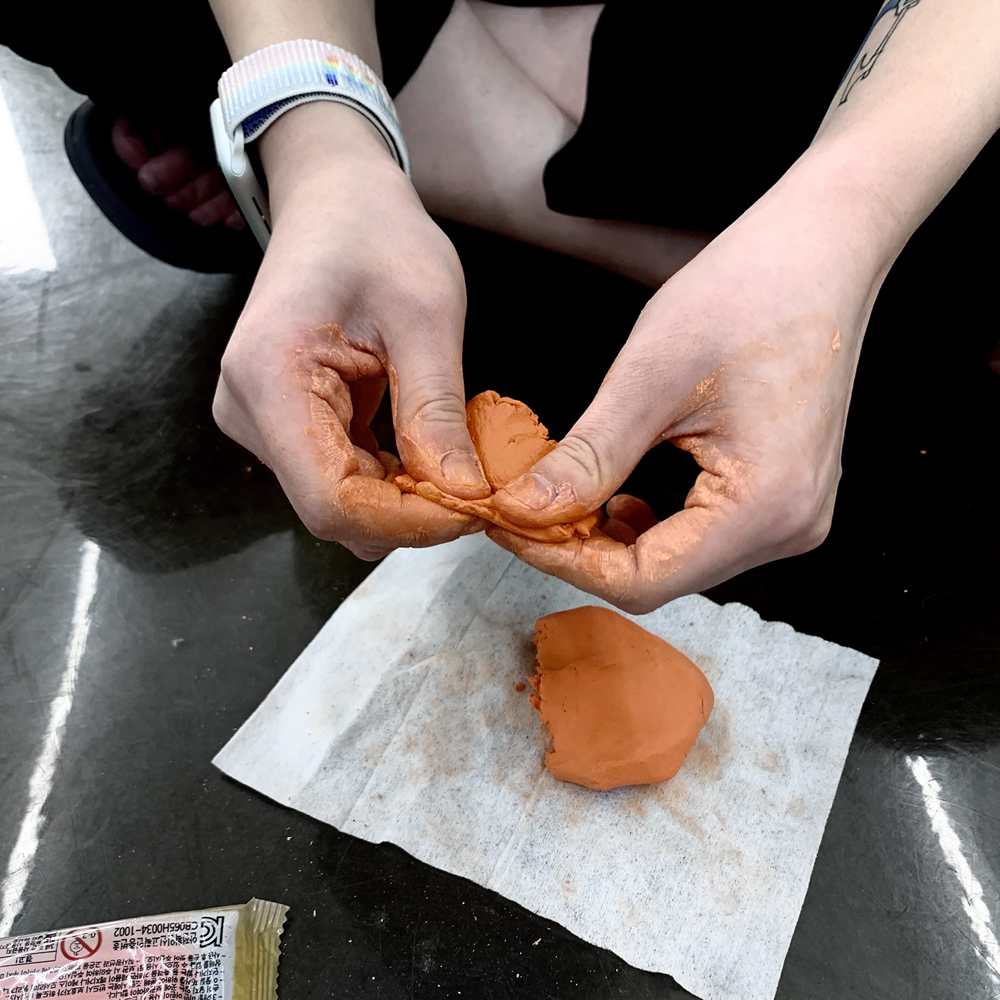

‹대체 텍스트 워크숍›은 대체 텍스트의 의미1)와 작동 방식2)을 살펴보고 참가자들이 직접 대체 텍스트를 써보는 과정3)을 통해 대체 텍스트의 필요성과 작성 방식을 익히는 워크숍입니다. 이 워크숍을 통해 장애 여부와 상관없이 온라인에서 미술 작품에 접근할 수 있는 방법을 함께 고민합니다.
1)
대체 텍스트(alt text)는 ‘alternative text’의 줄임말로, 온라인 상에 올라와 있는 이미지를 묘사하는 글을 뜻합니다.
2)
대체 텍스트는 HTML 요소 안에 입력하기 때문에 일반적인 유저 인터페이스에는 대개 드러나지 않으며, 이를 점자 또는 소리로 변환하는 소프트웨어 ‘스크린 리더’를 통해 확인할 수 있습니다.
3)
대체 텍스트 워크숍 구성은 다음과 같습니다.
— 도입 | 용어 및 개념 소개
— 활동 1 | 단어에서 문장으로
— 활동 2 | 세 문장으로 쓰기
— 활동 3 | 문장 그리기
— 마무리 | 적용하기
‹대체 텍스트 워크숍›은 2022년 8월부터 매월 마지막 주 금요일 진행하며 사전 신청을 통해 누구나 참여할 수 있습니다.
→ 워크숍 신청하기
기타 문의 사항은 다음의 이메일 주소로 연락 바랍니다. afterneworder@gmail.com
→ 참고 자료
주황색 점토를 쥐고 있는 손 한 쌍이다. 엄지손가락을 맞닿은 채 두 손을 오므렸다. 연한 주황색으로 굳은 점토가 손가락에 덕지덕지 묻어있다. 손 아래에 주황색 점토 덩이가 있다. 점토 덩이는 흰 천 위에 있다. 바닥은 진회색이다.